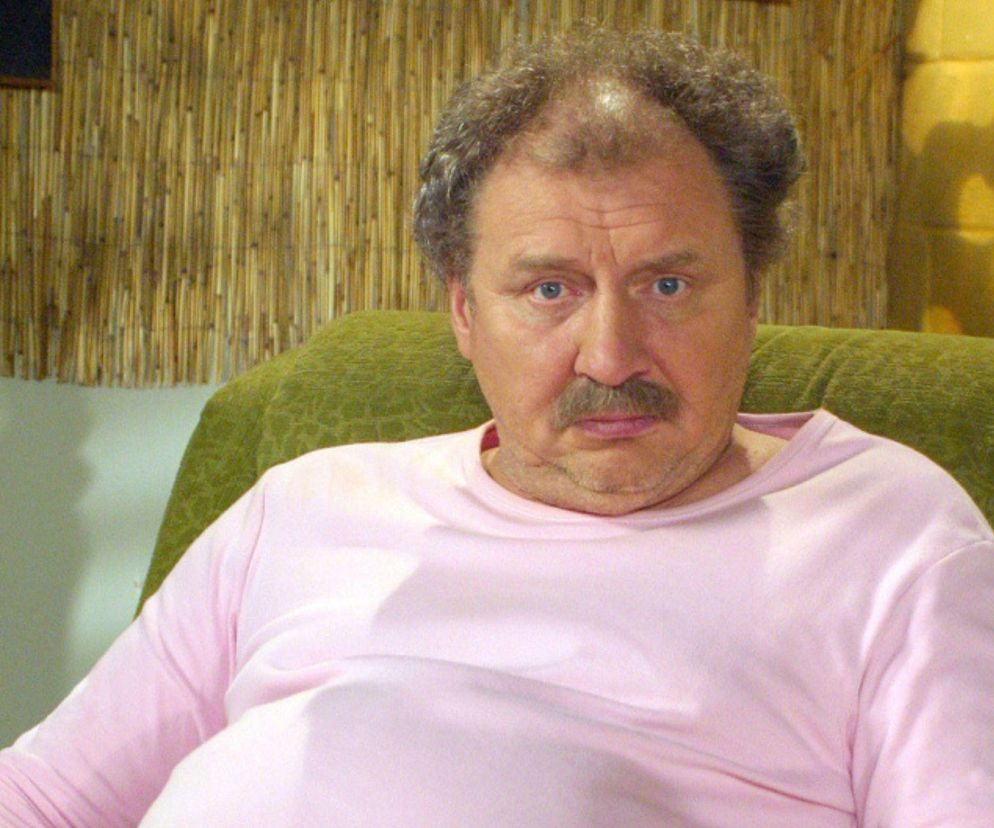
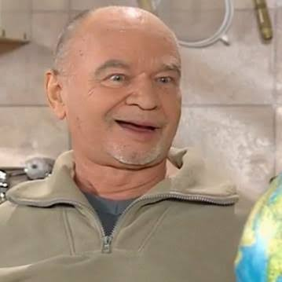
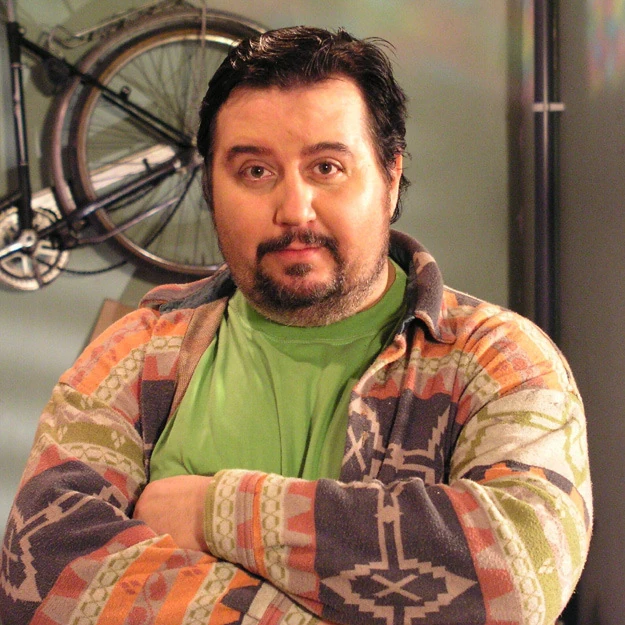

Głowa rodziny, absolutny przeciwnik jakiejkolwiek pracy zarobkowej. Jego życiowym celem jest "zarobić, a się nie narobić". Miłośnik piwa Mocny Full i spędzania czasu przed telewizorem.

Sąsiad Kiepskich, handlarz bielizną na bazarze. Postać niezwykle sprytna, często cyniczna i dwulicowa. Stały bywalec na korytarzu, dzielący się z Ferdkiem nowymi, absurdalnymi pomysłami na biznes.

Niezbyt bystry, ale sympatyczny rzeźnik z wyższego piętra. Słynie z naiwności oraz tego, że nielegalnie i nagminnie korzysta z prywatnej toalety na piętrze Kiepskich, co doprowadza Ferdka do szału.
